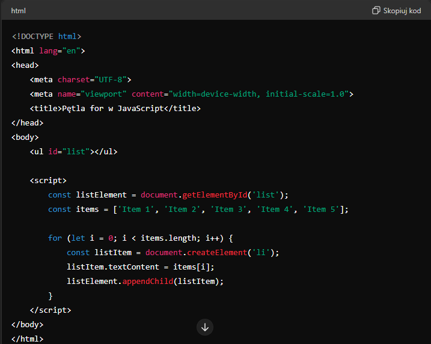
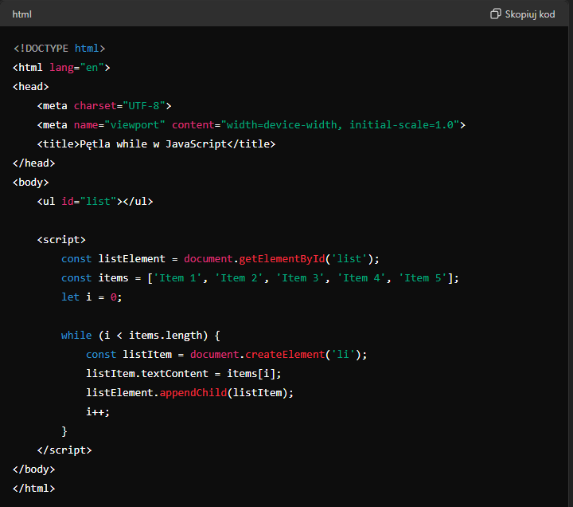
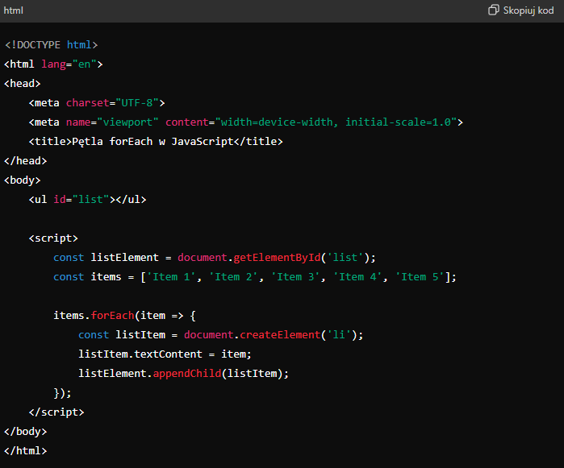

W HTML i powiązanych technologiach pętle są często stosowane w połączeniu z językami
skryptowymi, takimi jak JavaScript, oraz technologiami szablonów, jak np.
Handlebars, EJS, czy JSX (React). Chociaż sam HTML nie ma natywnej obsługi
pętli, to w połączeniu z JavaScriptem możemy dynamicznie generować zawartość
strony.
Pętla for
Pętla for jest jedną z najczęściej używanych pętli w JavaScript do generowania
dynamicznej zawartości w HTML. Przykład prostego użycia:

Pętla while
Pętla while może być również używana do podobnych celów. Oto przykład:

Pętla forEach
Pętla forEach jest używana do iteracji po elementach tablicy i wykonania funkcji
dla każdego elementu. Jest często bardziej czytelna i elegancka.
